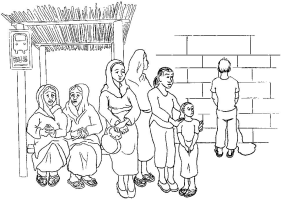
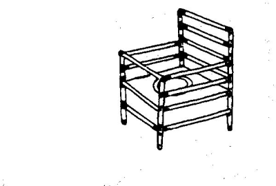
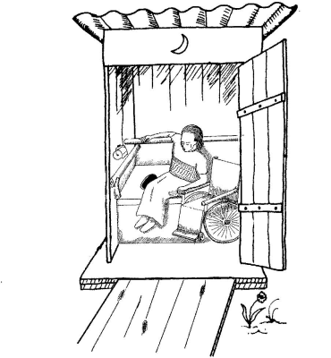
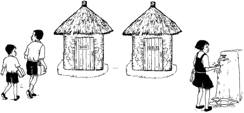
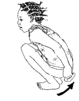

Planning for sanitation
Planning for sanitation
{kind=link}
Introduction
Every person and every community has a way of dealing with sanitation, even if it just means that people go into the bush to urinate and defecate. Households and communities can benefit from talking about the sanitation methods that will work best for everyone. Healthy sanitation must consider the needs of children, who cannot take care of themselves. It must also ensure that women have toilets that they feel safe using and a way to keep clean during monthly bleeding.
Small steps to sustainable sanitation
- keeping wash water and soap near the toilet
- adding a vent to a pit toilet
- adding a hard, durable platform to an open pit
- Prevent disease - it should keep disease-carrying waste and insects away from people, both at the site of the toilet and in nearby homes.
- Protect water supplies - it should not pollute drinking water, surface water, or groundwater.
- Protect the environment - ecological sanitation can prevent pollution, return nutrients to the soil, and conserve water.
- Be simple and affordable - it should fit local people's needs and abilities, and be easy to clean and maintain.
- Be culturally acceptable - it should fit local customs, beliefs, and desires.
- Work for everyone - it should address the health needs of children and adults, of women and men.
Sanitation decisions are community decisions
Someone must clean the toilet
Women and men have different sanitation needs
Women and men have different needs and customs when it comes to sanitation. Men may be more comfortable than women relieving themselves in public or open spaces. Women are burdened with a greater share of family work like collecting water and firewood, cooking, and cleaning. They are usually responsible for taking care of children and their sanitation needs as well. All of these things affect their access to toilets that are safe, clean, comfortable, and private.
Addressing women's needs often challenges traditional ideas about how decisions are made. Because it may be difficult to make or accept changes, it takes time and effort by both men and women to improve health for everyone.
|  |
| Women and men have different needs and customs when it comes to sanitation |
| (c) The Hesparian Sanitation
|
Sanitation planning with women's needs in mind
- organizing meetings at times when women can participate.
- ensuring that women are invited to speak out and can feel comfortable speaking out.
- having separate meetings for women if it makes open discussion easier.
- sharing decision-making power.
Removing the Barriers to Sanitation for Women
Time: 1 to 1 1/2 hours
Materials: flip chart or large drawing paper, pens, sticky tape.
Access for disabled children and adults
People need different adaptations depending on their ability
|  |
| Raised seat for people with difficulty to squat. A removable front bar can be added if needed. |
| (c) The Hesparian Sanitation
|
Toilets for wheelchairs:
|  |
| Toilets for wheelchairs |
| (c) The Hesparian Sanitation
|
- shelter big enough so that a wheelchair can fit inside
- arm or shoulder supports close to the toilet
- toilet seat and wheelchair on same level
- extra wide door for easy access
- hand rail to make moving from wheelchair to toilet easier
- wheelchair can enter beside the toilets without having to turn around
- ramp to allow wheels to roll in
- path to the toilet is level and easy to get to from the house
- Remember, a disabled person feels the same need for privacy as anyone else. Help disabled people get the privacy they need.
Sanitation for children's health
| Children have a high risk of illness from poor sanitation. While adults may live with diarrhea diseases and worms, children die from these illnesses. It is important for children to have toilets that are safe and that feel safe. When children feel safe using the toilet and have an easy way to stay clean, they get sick less. Pit toilets can be dangerous and frightening for small children because of the darkness and the large hole. Many children, especially girls, leave school because safe toilets and healthy conditions are not provided for them. Allowing children to help build toilets and teaching them about illness caused by poor sanitation are some ways to help them develop healthy behaviors. |
 |
| Sanitation for children's health |
| (c) The Hesparian Sanitation
|
|  |
| Every school should have safe sanitation and a way for children to wash hands after using the toilet. |
| (c) The Hesparian Sanitation
|
Helping small children stay clean
Many people believe that children's feces are not as dangerous as those of adults. This is not true. All feces carry many harmful germs, and handling them can cause serious illness in children
In rural areas, parents can help children too small to use a toilet by making a hole near the house, and covering the hole after each use. It is also important to:
- Wash babies and young children after they defecate.
- Wash hands after handling babies' feces.
- Bury the feces or put them in a safe toilet.
- Wash soiled clothes away from drinking water sources.
Teach boys and girls to wipe or wash carefully and to wash their hands after using the toilet. Girls especially should be taught to wipe from front to back. Wiping forward can spread germs into the urinary opening and the vagina, causing bladder infection and other health problems.
|  |
| Helping small children stay to clean |
| (c) The Hesparian Sanitation
|
Sanitation for cities and towns
The main barriers to good sanitation services in cities are:
- Political. Local governments may not want to deliver services to informal settlements and poorer neighborhoods. And there may be laws that prevent people from planning and building their own sanitation systems.
- Cultural. People and officials in cities often want flush toilets and costly sewer systems, making it difficult to agree on more sustainable and affordable alternatives.
- Physical. Often, sanitation is considered only after neighborhoods and settlements have roads, electricity, and water. Once a city is built, it is much harder to plan for and build sanitation services.
- Economic. Large sanitation systems, especially water-based systems, are costly to build and maintain. If water systems are privately owned rather than provided by governments, it is even harder for people to afford sanitation.
Planning for urban sanitation is made easier when:
- people have choices that fit their different needs.
- community groups take the lead in developing solutions that are appropriate and affordable.
- people's human right to have water is recognized.
- the needs of the most vulnerable groups are taken into account.
- partnerships are built among communities, non-governmental organizations, local governments, and businesses. For these partnerships to work well, they must be controlled by those most in need of sanitation improvements - the communities themselves.
Sanitation for emergencies
 |
| Sanitation for emergencies |
| (c) The Hesparian Sanitation
|
Community sanitation in Yoff, Senegal
Creative solutions for healthier cities
Information Source Links
- Sanitation and Cleanliness for a Healthy Environment - The Hesperian Foundation in collaboration with the United Nations Development Programme (2005). The Hesperian Foundation
Last updated.
| Unless otherwise stated, all content on the Infonet Biovision Website is licensed under a Creative Commons License | Disclaimer |